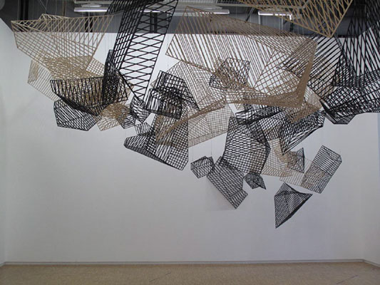

The Cages
Year
2009
Materials
Wood and Steel Cages
Dimension
Variable Dimensions
Description
The occupied cage is a container (sometimes temporary) for a living being that has been separated from its environment. The empty cages are an image that leaks off-screen. Here, the cages are formed by skewed surfaces. They are both organic and geometric, paradoxically closed and open objects (open because light passes through them).
